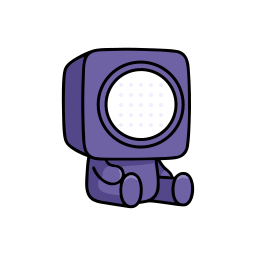

The shared UI primitives and product components of the BountyDesk app, drawn live in the docs tokens. 51 entries from components/, components/ui/ and the case file in app/(app)/reports/[id]/. Each shows what it does, its source file and the files that import it. The renderings are HTML and CSS approximations, not the React components; the source is the authority.
Theme
The proposed mobile component set, Variant C, read from the 28 mockups in screens/ and the kit in screens/c.css and c.js. The app is iOS and Android only and is proposed, not built: nothing here is a React Native component yet. Each entry shows what it does, the Expo primitive it maps to and the screens that use it. The renderings are minimal HTML and CSS re-creations on the iOS look; use the buttons to see the Android (Material 3) look. On the web, phones use the responsive desktop app.
Mobile components
Nineteen parts, proposed.
Floating tab pill and Review next
screens/c.css .dock, .tabs, .tab, .fab
Three tabs, Home, Queue and Reports, in one glass pill, with a separate round Review next button that carries the count of waiting verdicts. Shown only on the three tab screens. On Android the pill is a Material 3 floating toolbar with a filled indicator on the active item and Review next is a rounded-square FAB. First run replaces the button with Connect a repository.
Maps to: Expo Router NativeTabs for the three tabs; a Pressable in a View beside it for Review next. Open: the badge and the separate action are not a NativeTabs feature, so the button is positioned by hand.
Used on m4m5m6
Home Queue Reports
3
Top-right glass pill and more menu
screens/c.css .topbar, .ib, .menu.pop
On tab screens a glass pill holds the bell (Inbox, with the unread count in its label) and a more button. More opens a small menu: Settings, Connections, Integrations. Inbox and Settings are not tabs.
Maps to: Header right items in the Expo Router native stack; the more menu is a native menu so it follows the platform.
Used on m4m5m6
Settings
Connections
Integrations
Round back button and action pill
screens/c.css .topbar.l.round, .topbar
Detail screens have a round glass back button top left and, when useful, an action pill top right (share and a case menu on the case file). On Android the back is an arrow in a round tonal button. The title below is 28 px bold.
Maps to: The Expo Router native stack header: the header back button and header right items. The 28 px title is the large title.
Used on m7m8m9m10m11m13m14m15m16m17m18m19m21m22m23m24m25m26m27m28
Case file
Section header with chevron
screens/c.css .sh
A 20 px semibold header. When the section is a destination it carries a chevron and a count, and the whole header is one 48 px target that opens that tab (Needs you opens Queue). A more button opens a sort menu.
Maps to: A Pressable row with Text and a chevron icon; the sort menu is a native menu. Not an @expo/ui Section header, which has no chevron.
Used on m4m5m7m9m11m13m14m15m16m17m19m20m22m23m26m27m28
Needs you 3
Card and list row with phase pills
screens/c.css .card, .list, .item, .pill
The building block. A card is a 24 px radius surface and is never nested inside another card. A list card holds rows with a title (two lines at most), a mono id as the subtitle, and on the right a phase pill and the age. Pills are a 16 percent tint of the phase hue with a dot and always name the phase.
Maps to: A View with borderRadius 24 holding Pressable rows; the pill is a View and a Text from the phase tokens. @expo/ui List is an option for settings-style lists but not for these rows.
The Needs you section on Home scrolls sideways through large cards, 286 wide with snap. Each card has the id and pill, a two-line title, the target and a footer with severity and age. A section scrolls one direction only.
Maps to: A horizontal FlatList with snapToInterval; each card is a Pressable View. Long press opens the context menu.
Used on m4
BD-1042Awaiting approval
Stored XSS in search results
juice-shop v17.3.0 1867b92
High12 min
BD-1044Awaiting approval
SSRF through the image proxy
Quick links
screens/c.css .links, .tile
A row of 112 wide tiles at the top of the case file: Timeline, Tool calls, Sandbox and Chat, each an icon, a label and a count. It scrolls sideways when the row is wider than the screen.
Maps to: A horizontal ScrollView of Pressables. Icons from the SF Symbols or Material set through expo-symbols, not the drawn ones.
Used on m7
Timeline9 events
Tool calls14
Sandbox2 stages
Floating contextual bar
screens/c.css .fbar
The one primary action of a screen floats above the content in a glass bar, with an icon button when there is a second route. Case file: chat and Open verdict. Sign the verdict: Deny and Approve. Not used on tab screens, which have the tab pill.
Maps to: A View pinned inside the safe area with a Pressable button; the blur comes from expo-blur on iOS, a tonal surface on Android.
Used on m7m11m12m13m14m20m28
DenyApprove
Open verdict
Sheet with grabber, X and check
screens/c.css .sheet, .sbtn, .grab, .scrim
A bottom sheet with a grabber, an X on the left that cancels and a check on the right that confirms. The screen behind scales to about 0.94 and dims. Deny uses it on the sign screen (m13 is the same screen with the sheet already open) and target material uses it on the submit form. It drags away on a velocity or past 35 percent.
Maps to: Expo Router formSheet with a grabber and detents on iOS; a Material bottom sheet on Android. The X and check are header buttons.
Used on m11m13m20
Deny this verdict
Nothing is sent to GitHub
Not reproducible
Duplicate
Long-press overlay
screens/c.css .lp-hit, .lift, .menu
A 450 ms press on a report card or row blurs everything else, lifts the card and opens a menu: Open case file, Copy report id, Share, Assign to me. Escape or a tap outside closes it. Copy report id and Assign to me are also in the case menu.
Maps to: An Expo Router Link with a preview and a context menu on iOS; a long-press menu on Android. Screen readers need the same four as accessibility actions.
Used on m4m5m6
Stored XSS in search resultsBD-1042Approval12m
Open case file
Copy report id
Share
Assign to me
Empty state with mascot and arrow
screens/c.css .empty, .arrow, .cap
Agent Bounty, one title, one line and the next action. First run on Home points an arrow at Review next, which has become Connect a repository. A search with no results says so, suggests a fix and offers Clear search. Not authorized (m3) uses the same shape.
Maps to: A centered View with an Image, Text and a Button. The hand-drawn arrow is an SVG through react-native-svg.
Used on m3m4m6
No reports yet
Connect a repository and reports start arriving here.
Connect a repository
Toast
screens/c.css .toast
A short glass pill above the tab bar that confirms an action ("Approved. Sending to GitHub", "Denied. Nothing was sent", "Verified"), then leaves by itself after two seconds. On Android it is a flat snackbar with an 8 px radius.
Maps to: An absolutely positioned View animated with Reanimated, announced as a polite status.
Used on m3m4m7m11m13m14m18m21m28
Approved. Sending to GitHub
Switch
screens/c.css .switch
51 by 31, the native size. A settings row that holds a switch toggles it from anywhere on the row, which is what makes it a valid target. Three notification switches: Approvals needed, Delivery receipts, Reproduction failures.
Maps to: @expo/ui Switch. A bare switch outside a row would need extra hitSlop.
Used on m19
Approvals needed
Reproduction failures
OTP field
screens/c.css .otp, .ob
Six boxes, 48 by 58, each labelled "Digit 1 of 6" to "Digit 6 of 6". A digit moves focus on, a paste fills all six, and the sixth digit accepts the code with a success haptic. M18 verifies a reviewer email; M21 verifies the uploader contact and shows Report received in place.
Maps to: Six RN TextInput boxes with textContentType oneTimeCode on the first. The autofill props are RN built-ins to confirm on device.
Phase filter chips (All, Approval, Reproducing and so on) and a search field filter the Reports list as you type. Chips are 44 on iOS and 48 on Android. With no match the list says so, suggests a fix and offers Clear search.
Maps to: Pressable chips in a horizontal ScrollView; the field is a TextInput, or the Expo Router header search bar.
Used on m6m10
Search reports
AllApprovalReproducing
No matching reports
Try another phase or clear the search.
Clear search
Chat bubble and composer
screens/c.css .chat, .bub, .composer, .sugg
Agent replies on the left in a card, reviewer messages on the right in the brand color, suggestion chips under the last reply, and typing dots while the worker answers. The composer is a glass bar with a 48 px send button; Enter sends unless an IME is composing.
Maps to: Views and Text in a FlatList; the composer is a TextInput. New bubbles rise in with Reanimated.
Used on m10
Agent Bounty
The q parameter reaches the page unencoded.
Retry the probe with the fixture token
Message
Timeline
screens/c.css .tl, .tle
Vertical events on a card with a phase-colored dot, a title, a source line and a mono time. The line stops at the first and last dot. Long, so it needs a virtualized list.
Maps to: A FlatList of event rows inside a card; the line is a View per row.
Used on m8
ReportedGitHub issue09:41
ReproducedOffline sandbox09:52
Verdict draftedWaiting for you10:03
Diagram nodes
screens/c.css .dg, .node, .conn
Steps of the sandbox and onboarding diagrams: a tinted icon, a kind tag, a title and a connector. Dashed connectors mark a boundary. The whole diagram has one screen reader label that states the result.
Maps to: Custom Views joined by connector Views (or react-native-svg); how it is drawn is not decided.
Used on m26m27
BuildBuild sandbox
ReproduceOffline sandbox
Receipt
screens/c.css .receipt, .kv, .hash
The done screen after approval: a mascot, then a card of key and value rows separated by dashed rules (channel, receipt, delivered time) and the content hash in mono. A hash on the sign screen is the text the person approved.
Maps to: A View with key and value rows; the hash is selectable Text.
Used on m12m11m13
ChannelGitHub issue comment
Receipt2xx on the comment
Hashsha256:9f2c61ab07d4
Primitives
components/ui/. Base UI and shadcn-style building blocks. Everything else composes these.
Button
components/ui/button.tsx
The one button. Six variants and eight sizes through class-variance-authority, built on the Base UI button. A loading prop swaps in a spinner, sets aria-busy and disables the control while the label stays put so the button keeps its width.
Hover and press the buttons: the press nudges down 1px.
Used in 48 files (app)/board/error.tsx(app)/connections/approve-onboarding-button.tsx(app)/connections/connection-tabs.tsx(app)/connections/download-artifact.tsx and 44 more
Variants
Sizes
States
Badge
components/ui/badge.tsx
A small status label. The success variant is the emerald tint used for good outcomes; the phase and outcome badges below are built on top of it.
Used in 22 files (app)/board/queue-live.tsx(app)/connections/connection-tabs.tsx(app)/connections/repository-sheet.tsx(app)/home/page.tsx and 18 more
defaultsecondaryoutlinedestructivesuccess
Input
components/ui/input.tsx
A single-line text field with a 3px focus ring in the ring token. Used for model keys, sandbox settings, email allowlists and search.
Click into a field to see the focus ring.
Used in 14 files (app)/board/queue-live.tsx(app)/connections/connection-tabs.tsx(app)/integrations/configure-email-intake.tsx(app)/integrations/integration-list.tsx and 10 more
Select
components/ui/select.tsx
A Base UI select: trigger, value, content, items, groups, labels and scroll buttons. The open list is the same popover surface as the dropdown menu.
Used in 4 files (app)/integrations/integration-list.tsx(app)/reports/[id]/connect-guide.tsx(app)/reports/[id]/target-control.tsx(app)/settings/model-provider-form.tsx
deepseek-v4.1v
Model
deepseek-v4.1ok
gpt-5-mini
claude-sonnet
DropdownMenu
components/ui/dropdown-menu.tsx
Menu with items, groups, labels, checkbox and radio items, submenus and shortcuts. The sidebar account menu and the verdict decision menu use it.
Used in 2 files (app)/reports/[id]/verdict-card.tsxcomponents/app-sidebar.tsx
Account
Settingsg s
Integrations
Sign out
Card
components/ui/card.tsx
Surface with header, title, description, action, content and footer slots, and a sm size. Built and exported, no screen imports it yet; the product draws its panels with plain bordered divs.
Used inno importers at this commit
Case file
Reproduction run 1
Reproducing
Agent Bounty is probing the pinned target.
Dialog
components/ui/dialog.tsx
Modal with overlay, header, title, description, footer and an optional close button. Confirmation prompts for approve, deny and the intake gates are all this.
Used in 15 files (app)/connections/onboarding-dialog.tsx(app)/integrations/[id]/manage-access.tsx(app)/integrations/configure-email-intake.tsx(app)/integrations/manage-email-access.tsx and 11 more
Approve this verdict?
The exact text is signed. A changed byte is refused at delivery.
Sheet
components/ui/sheet.tsx
A side panel with header, footer, title and description. The findings panel, the lifecycle events panel, repository details and harness settings open in one.
Used in 5 files (app)/connections/repository-sheet.tsx(app)/reports/[id]/findings-panel.tsx(app)/reports/[id]/lifecycle-list.tsx(app)/settings/harness-tabs.tsx and 1 more
Events
Reproducing, 12 events
Tabs
components/ui/tabs.tsx
Default pill list and a line variant, horizontal or vertical, on Base UI tabs.
Click a tab to switch the selection.
Used in 2 files (app)/connections/connection-tabs.tsx(app)/settings/harness-tabs.tsx
Tooltip
components/ui/tooltip.tsx
Provider, trigger and content with an arrow, inverted to the foreground colour.
Used in 3 files (app)/reports/[id]/target-control.tsxcomponents/intake-failures.tsxcomponents/ui/sidebar.tsx
Reproduce on the bound target
HoverCard
components/ui/hover-card.tsx
A preview card that opens after a 200 ms delay. The case file uses it to show a tool call's arguments and result from its row.
Hover the button.
Used in 1 file (app)/reports/[id]/tool-call-detail.tsx
probe_target
GET /rest/products/search?q=
200, 4.2 KB, canary echoed
Avatar
components/ui/avatar.tsx
Image with a fallback, three sizes and a status badge.
Used in 1 file (app)/reports/[id]/page.tsx
VTVTVT
Skeleton
components/ui/skeleton.tsx
A pulsing placeholder block. Five loading.tsx files are built from these: (app)/loading.tsx, board, integrations, integrations/[id] and reports/[id]. The root app/loading.tsx does not use Skeleton, and /home, /reports, /connections and /settings have no loading.tsx.
Used in 6 files (app)/board/loading.tsx(app)/integrations/[id]/loading.tsx(app)/integrations/loading.tsx(app)/loading.tsx and 2 more
Separator
components/ui/separator.tsx
A 1px horizontal or vertical rule in the border token.
Used in 2 files (app)/layout.tsxcomponents/ui/sidebar.tsx
ReportsBoard
Breadcrumb
components/ui/breadcrumb.tsx
Nav, list, item, link, page, separator and ellipsis. Built and exported, no screen imports it yet; the header label comes from CurrentPage instead.
Used inno importers at this commit
Reports/GHSA-q5pc/Case file
Collapsible
components/ui/collapsible.tsx
Root, trigger and panel on Base UI collapsible. Built and exported, no screen imports it yet; the product uses native details for disclosures.
Used inno importers at this commit
Initial triage
The triage summary and the possible duplicates.
Sidebar
components/ui/sidebar.tsx
The shadcn sidebar kit: provider, rail, groups, menu buttons, inset and a mobile sheet. 726 lines; AppSidebar uses most of it, and (app)/layout.tsx also imports SidebarProvider, SidebarInset and SidebarTrigger.
Used in 2 files (app)/layout.tsxcomponents/app-sidebar.tsx
Home
TextAnimate
components/ui/text-animate.tsx
Per-character, word or line text entrance on Motion, with fade, blur, slide and scale presets. The landing page headline uses it.
Used in 1 file app/page.tsx
Readeveryreport.
MarqueeAlongSvgPath
components/ui/marquee-along-svg-path.tsx
Items that travel along an SVG path instead of a straight line. Each item is its own component so its hooks run at the top level.
Used in 1 file app/page.tsx
Phase and status
Colour carries the report lifecycle. These are the pieces that say where a report is.
PhaseDot / PhaseBadge / PhaseSpinner
components/phase-dot.tsx
The one place a report phase turns into a colour: a dot, an ink class, and a tinted pill. Six phases: triaging, reproducing, analysis-only, awaiting-approval, delivered, closed. The spinner replaces the dot for a report something is actively working on. Dots are aria-hidden because a label always sits beside them.
Used in 6 files (app)/reports/reports-table.tsxapp/panels.tsxapp/queue-preview.tsxcomponents/app-sidebar.tsx and 2 more
State badge from the report's state and phase, with a red Failed badge when a delivery or run failed, since a failure outranks the state. The outcome badge maps REPRODUCED, NOT_REPRODUCED, INCONCLUSIVE and ANALYSIS_ONLY to emerald, sky, amber and the approval hue. Labels come from lib/reports/labels.ts so server and browser agree.
Used in 3 files (app)/reports/[id]/case-realtime-badges.tsx(app)/reports/reports-table.tsxcomponents/queue-board.tsx
State
TriagingAwaiting approvalDeliveredFailed
Outcome
ReproducedNot reproducedInconclusiveAnalyzed
IntakeFailures
components/intake-failures.tsx
One badge beside the queue's count for intake deliveries that gave up. Pending and running deliveries once had a strip that moved the board as mail arrived; only a dead letter needs a reviewer, so only that is shown. Every string is a text node and the API sends the payload-free view.
Used in 1 file (app)/board/queue-live.tsx
Review queue7 reports2 intake failed
Diagrams
Flowcharts drawn from live state, in the phase colours.
SandboxDiagram
components/sandbox-diagram.tsx
How this report's run actually went, as a top-to-bottom flowchart: connected repo at a pinned commit, the trusted controller, and the target runtime. A node is ticked only from what the database can show, so a stage that never ran does not wear a mark. Cards are measured and joined with bezier connectors.
Three nodes because three are real on the agent-authored path (decisions Q22).
Used in 2 files (app)/reports/[id]/case-view.tsxapp/page.tsx
Connected repo
GHVaibhav91one/juice-shopPinned commitok
Trusted controller
BDBountyDeskok
Target runtime
DKjuice-shop v17.3.0sandbox-8f2c91ok
OnboardingDiagram
components/onboarding-diagram.tsx
How a repository becomes a reproduction target: classify and review, build, snapshot and manifest, human approval, offline verify, then the target profile is written. Each node ticks from the current onboarding state. It carries a copy of the connector layout from SandboxDiagram.
A source comment notes the ~70 duplicated lines and says to extract a shared FlowChart if a third diagram appears.
Used in 1 file (app)/connections/onboarding-dialog.tsx
Connected repo
GHowner/targetCloned in a build sandbox at a pinned commitok
Classify & review
AGOnboarding agentDecides whether the repo can be sandboxedok
Build
DKBuild agentBuilds the target image in a DinD sandboxok
Snapshot & manifest
SNBuild driverPins a snapshot and derives the target manifestok
Approval
HUHuman reviewerApproves the exact build, name and digestok
Verify
OKOffline verifyBoots the snapshot with no egress
Configured target
RTReproduction targetWritten server-side and bound to the repo
Queue and tables
The two list surfaces: the board and the reports table.
QueueBoard
components/queue-board.tsx
The review queue as columns of cards. It takes rows and draws them, reading nothing from the database, which is how the landing page shows the real board with example data. Agent Bounty rides every in-pipeline card; terminal states are left bare on purpose. TRIAGING, REPRODUCING and DELIVERING pulse; AWAITING_APPROVAL does not, because nothing is running.
Mascots bob out of step with each other (MascotFloat).
Used in 3 files (app)/board/queue-live.tsxapp/page.tsxapp/queue-preview.tsx
Triaging
Open redirectTriaging
Reproducing

Reflected XSS in searchReproducing
IDOR on /api/UsersReproducing
Awaiting approval

SQLi in loginWaiting on a reviewer
FilterTable
components/filter-table.tsx
A table with chips above it that filter the rows. Chips count what they would show, the grid is bordered divs rather than a table element, and a filtered-out row collapses over a grid-template-rows transition so the list rearranges instead of reloading. The caller decides what is hidden.
Click a channel chip to filter the rows.
Used in 3 files (app)/connections/connection-tabs.tsx(app)/reports/[id]/findings-panel.tsx(app)/reports/reports-table.tsx
ReportChannelOutcome
Reflected XSS in searchGitHubReproduced
SQLi in loginEmailAnalysis only
Open redirectAdvisoryTriaging
Path traversal on /ftpUploadReproduced
Case file
app/(app)/reports/[id]/. The screen where a reviewer reads a run and signs the verdict.
StatusCard
app/(app)/reports/[id]/status-card.tsx
The report at a glance: Agent Bounty in the state the report is in, and the facts beside him. Every value reads off the live view, so the status, the mascot and the event count change together. The mascot is the same one the board shows for the report.
Used in 1 file (app)/reports/[id]/case-view.tsx
StateReproducing
Targetjuice-shop v17.3.0
Events14
Issue#1042
VerdictCard
app/(app)/reports/[id]/verdict-card.tsx
The drafted verdict and what approving binds: outcome, content hash and destination. An evidence meter reads the record, not a model confidence: three bars is the agent's own investigation reaching a positive result, two is a completed run that found nothing, one is no investigation. A decision menu offers approve and deny.
Used in 2 files (app)/reports/[id]/approval-dialog.tsx(app)/reports/[id]/case-view.tsx
ReproducedAgent Bounty
What approving binds
Outcome
Reproduced
Content hash
sha256:9c1e4a...b07
Destination
GitHub issue #1042
VerdictBody / VerdictDialog
app/(app)/reports/[id]/verdict-dialog.tsx
The verdict's own words, rendered from the structured draft rather than by parsing the markdown payload. The agent may have read prompt-injection text off an untrusted target, so every field is shown as text, never as HTML or through a markdown renderer. break-words and break-all keep long tokens from widening the dialog.
Used in 1 file (app)/reports/[id]/verdict-card.tsx
Summary The product search reflects the q parameter into a UNION query. The per-run canary came back in the response and did not in the negative control.
Findings
1. SQL injection in /rest/products/search 2. No input validation on q
ApprovalDialog
app/(app)/reports/[id]/approval-dialog.tsx
Everything a reviewer needs before signing: the exact comment, the agent's chat, a digest of what the agent ran and the finding titles. Approving is one click because the comment is on screen. Not approving goes through the conversation, and that sentence becomes the denial reason. A second confirmation dialog guards both irreversible actions.
Used in 1 file (app)/reports/[id]/case-approval.tsx
Sign the verdict
The run has stopped here. Approve the exact words below, or say what is wrong with them.
Reproduced. The canary was returned by /rest/products/search and not by the control request.
Verdict
Reproduced
Target probes
6
Artifacts
3
ChatMarkdown
app/(app)/reports/[id]/chat-markdown.tsx
Renders an agent chat reply as markdown: headings, lists, bold, links and code. There is no rehype-raw, so angle brackets that the agent echoed off an untrusted target stay literal text. Images are dropped so a reply cannot beacon through a remote src. Renderers take only the children they need.
Used in 1 file (app)/reports/[id]/agent-chat.tsx
What I checked
Booted the pinned snapshot offline
Seeded a canary through /api/Users
Sent the payload and the control
<script>alert(1)</script> stays text.
AgentChat / PromptBar
app/(app)/reports/[id]/agent-chat.tsx
The reviewer chat is the only conversation channel (decisions Q17 and Q26). The thread follows new replies only when the reader is near the bottom, treats rows in the first snapshot as history, and sits above PromptBar's premade prompts.
Used in 2 files (app)/reports/[id]/approval-dialog.tsx(app)/reports/agent-chat.test.ts
Agent Bounty Reproduced on the pinned target. Want a re-check with a different payload?
Try the second route.
Explain the findingRe-check
LoaderGrid / ShimmerLabel / StreamingText
app/(app)/reports/[id]/agent-trace.tsx
Working-state furniture. A nine-cell pixel grid running one fade on nine delays, a shimmering label for the current step, and streaming text for a reply as it arrives. The grid cycle is shorter than the sweep so two fronts stay in flight.
Used in 1 file (app)/reports/[id]/agent-chat.tsx
Probing the target
LifecycleList / StepBadge
app/(app)/reports/[id]/lifecycle-list.tsx
The pipeline as a list, one row per phase with a count. A phase with events opens a sheet holding them, because a re-checked run records thirty-plus events. StepBadge (defined in lifecycle-step.tsx) is a numbered ring that becomes a tick when done and a dash when the report went around the step.
Used in 4 files (app)/reports/[id]/case-view.tsx(app)/reports/[id]/lifecycle-list.tsx(app)/reports/[id]/connect-guide.tsx(app)/connections/onboarding-stepper.tsx
okTriaging4
2Reproducing9
3Awaiting approval0
-Delivered0
FindingsPanel
app/(app)/reports/[id]/findings-panel.tsx
The agent's findings as a table on the FilterTable primitive. Each row is the agent's claim, not a certified fact; the findings file the run recorded is what backs it. Title and severity stay in the table and the full text opens in a resizable sheet.
Used in 1 file (app)/reports/[id]/case-view.tsx
Finding
Severity
UNION SQLi in product search
High
Verbose error on bad input
Low
ToolCallBlocks / ToolCallHover
app/(app)/reports/[id]/tool-call-detail.tsx
Arguments and result of one tool call under the row that names it. Live detail comes from TrueForge when it is reachable; otherwise the allowlisted argument preview mirrored into session_event is shown. The Vercel tier cannot reach the harness, so the fallback is the normal case there.
Used in 1 file (app)/reports/[id]/lifecycle-list.tsx
probe_target
args GET /rest/products/search?q=... result 200, canary found
ArtifactsPanel
app/(app)/reports/[id]/artifacts-panel.tsx
What each run left behind, each file addressed by its own hash and grouped by the verdict revision that produced it: the transcript, the outbound payload, the findings evidence and, for onboarded targets, the Dockerfile. A re-checked report shows one group per revision.
Used in 1 file (app)/reports/[id]/case-view.tsx
Revision 2
Findings evidencesha256:41ab..d9
Verdict payloadsha256:9c1e..b07
Earlier runs
Transcript, run 1sha256:7e20..11
TriageGate / UploadGate / AdvisoryGate
app/(app)/reports/[id]/triage-gate.tsx
The reviewer gates held at NEEDS_DECISION. An outside email, every advisory and every upload waits here before anything runs. Email shows the triage summary and possible duplicates; advisory has two decisions, run analysis or dismiss; upload adds a target form (readiness path, start command, ecosystem) that is validated server-side. Nothing is auto-closed.
Used in 1 file (app)/reports/[id]/page.tsx
Needs decision
Outside sender. SPF and DKIM passed.
TargetControl
app/(app)/reports/[id]/target-control.tsx
The bound target and what a reviewer can do about it. Only a report that arrived without a target offers a choice, because GitHub reports inherit theirs. Until a target is bound only ANALYSIS_ONLY is allowed.
Used in 1 file (app)/reports/[id]/status-card.tsx
juice-shop v17.3.0v
Binds the target, then runs
Mascot
Agent Bounty, the product's one character. Decoration that must stay correct when state changes.
AnimatedMascotSvg
components/animated-mascot-svg.tsx
Agent Bounty (the mascot) in the pose for a state. One request per mascot per page, shared by every card showing that state, and the markup is injected so the keyframes inside the SVG run. A rejected request is evicted so a dropped connection costs one retry, not a blank mascot for the life of the tab.
Fourteen poses ship in this site's assets/mascot.
Used in 8 files (app)/home/page.tsx(app)/reports/[id]/approval-dialog.tsx(app)/reports/[id]/lifecycle-list.tsx(app)/reports/[id]/status-card.tsx and 4 more
One mascot on a card, bobbing out of step with its neighbours. The bob is CSS and staggered by negative delay; the artwork's own choreography is staggered by shifting each animation's startTime, which keeps its relative delays intact.
Used in 1 file components/queue-board.tsx
MascotMarquee
components/mascot-marquee.tsx
Agent Bounty's states drifting upward inside the sign-in headline. No state, no timer, no client bundle: one CSS translation over a list rendered twice, with ids and keyframe names re-prefixed in the copy so cowboy's hat pattern resolves inside its own copy.
Used in 1 file app/login/page.tsx
Shell and public
The console frame and the signed-out pages.
AppSidebar / CurrentPage
components/app-sidebar.tsx
The console navigation: Home, Review queue, Reports, Integrations, Connections, Settings, plus active reports and the account menu. NAV is exported and CurrentPage reads the same list, so a route is never named one thing on the left and another along the top.
Used in 2 files (app)/layout.tsxcomponents/current-page.tsx
Review queue
QueryProvider
components/query-provider.tsx
Wraps the console layout in a TanStack Query client so the case view, the badges and the approval button share one request and one cache key.
The public chrome. TopBar is one sticky box holding the banner and header, which slides the banner away on a sustained scroll down and brings it back going up. SiteBanner is a seamless marquee of two identical tracks moving half their width. SiteHeader is a server component: two anchors (How it works, Questions) and a Get started button.
Used in 1 file app/page.tsx
Built for the WeMakeDevs × TrueFoundry × Qodo Agent Harness Hackathon Built for the WeMakeDevs × TrueFoundry × Qodo Agent Harness Hackathon
How it worksQuestions
SiteFooter
components/site-footer.tsx
The public footer with the legal links.
Used in 1 file app/page.tsx
ProductSign in How it works
ProjectSource Design record Agent guide
LegalTerms Privacy
LegalPage / LegalSection
components/legal-page.tsx
The shell for the privacy and terms pages: header lockup, title, back link, and titled sections. They exist because the sign-in card links to them.
Used in 2 files app/privacy/page.tsxapp/terms/page.tsx
Privacy
What we store
Reports, verdicts and the audit trail.
Reveal
components/reveal.tsx
Content that rises into place the first time it is scrolled to, once only. A render prop lets it be the list item itself, since a wrapper div would break the grid's own children.
Used in 1 file app/page.tsx
Rises into place on load in this demo.
Parallax
components/parallax.tsx
A backdrop that lags the page as it scrolls. The ref sits on the outer box and the transform on a child so the scroll measurement does not feed back into its own input.
Used in 2 files app/page.tsxapp/panels.tsx
Backdrop drifts against the frame
SmoothScroll
components/smooth-scroll.tsx
Lenis smooth scrolling for the marketing pages only; the console has its own scroll panels that a global library would fight. Renders nothing. No file imports it at this commit.
Used inno importers at this commit
renders null
RollingIcon
components/rolling-icon.tsx
An icon that rolls on hover: the resting copy leaves upward while an identical one arrives from below, behind an overflow mask. It answers both group/button and group/menu-button. The second copy is aria-hidden and not rendered under reduced motion.
Used in 23 files (app)/connections/repository-sheet.tsx(app)/home/home-live.tsx(app)/home/page.tsx(app)/integrations/[id]/page.tsx and 19 more

 scanning
scanning delivered
delivered celebrating
celebrating out-of-scope
out-of-scope